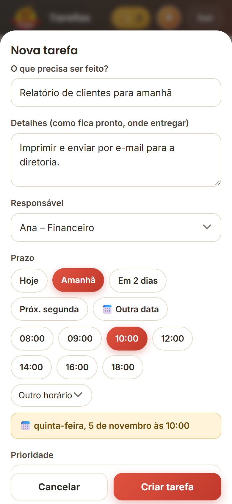
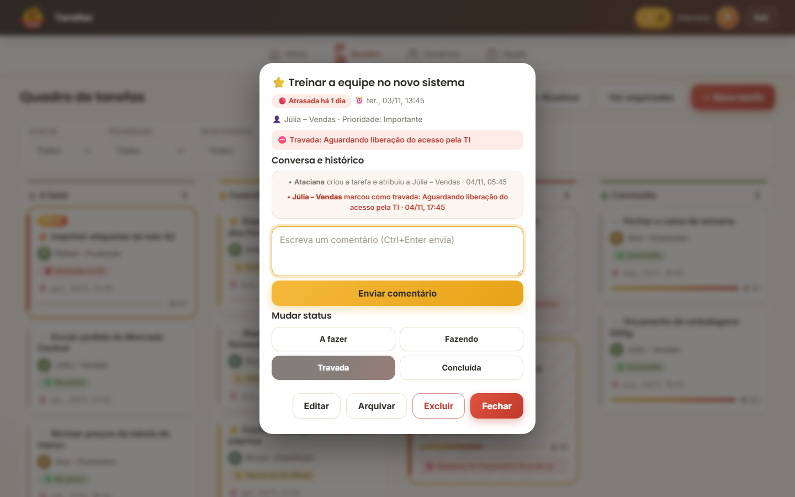
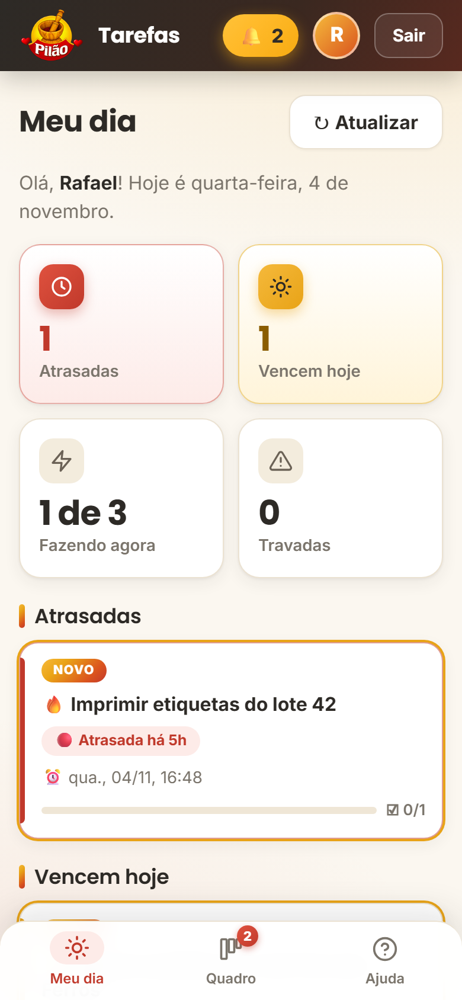
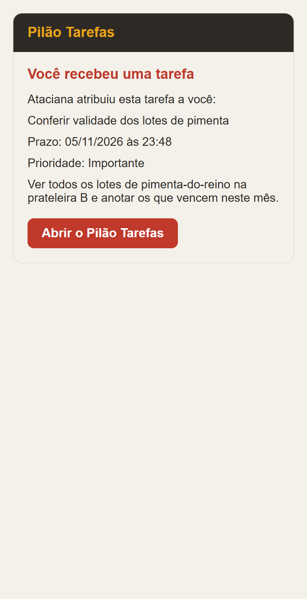

Pilão Tarefas:
nenhuma demanda esquecida.
Passe a tarefa com prazo, acompanhe o andamento e veja na hora o que travou e por quê. Simples de usar e funciona direto no celular, sem instalar nada.
Role para baixo↓

Quando a demanda se perde no caminho
Uma tarefa simples, um imprevisto e ninguém lembrando de cobrar.
😕 Sem o app
- "Preciso do relatório de clientes até amanhã, 10h."
Dito de passagem, ou num áudio que se mistura com outras 30 mensagens.
- A impressora falha.
Quem ia fazer percebe, mas o chefe já saiu e ninguém responde.
- Ninguém lembra.
A tarefa não está escrita em lugar nenhum.
- A reunião começa sem o relatório.
Só aí aparece a pergunta: "Cadê?".
😀 Com o Pilão Tarefas
- Tarefa criada com prazo e responsável.
Prazo: quarta, 10h. A Ana recebe o aviso na hora.
- A Ana trava a tarefa e explica o motivo.
"Impressora sem toner." O chefe é avisado e vê em vermelho.
- O chefe resolve na conversa da tarefa.
"Imprime na sala ao lado." Tudo registrado ali.
- Concluída antes do prazo. 🎉
Checklist completo, e o chefe só olhou o painel.
Não é falta de vontade. É falta de ver. O app deixa tudo à vista.
Três coisas que resolvem
Do jeito que você pediu: passar a demanda e acompanhar se foi feita.
Delegar com prazo
Título, responsável, data e hora, prioridade e "como fica pronto". Ninguém precisa adivinhar.
Acompanhar sem perguntar
Um painel mostra o que está a fazer, fazendo, travado e concluído.
Travou? Fica à vista
Quem trava explica o motivo, e a tarefa fica em vermelho até alguém resolver.
Criar leva meio minuto
Título, responsável e prazo em botões (Hoje, Amanhã, Em 2 dias…) ou no calendário. Se quiser, uma lista de "como fica pronto".
- Prioridade: 🔥 Urgente, ⭐ Importante ou Normal
- A pessoa recebe o aviso na hora


Tudo num quadro
Quatro colunas: A fazer, Fazendo, Travada e Concluída. O prazo avisa sozinho:
- 🟢 no prazo
- 🟡 vence em menos de 24 horas
- 🔴 atrasada, com a contagem "atrasada há 5h"
Para mudar de coluna, arraste o cartão com o mouse.
Travou? Fica à vista
Quem trava uma tarefa precisa escrever o motivo: sem motivo, o app não deixa. Ela vira vermelha no painel do dono, que recebe o aviso.
- Histórico automático: quem fez o quê e quando
- Conversa dentro da tarefa, sem WhatsApp

Cada um vê só o que é seu
O "Meu dia" mostra o que está atrasado, o que vence hoje e quantas tarefas a pessoa está fazendo agora.
- No máximo 3 em andamento: termine uma antes de começar outra
- A tarefa só conclui com o checklist todo marcado
- O selo NOVO só some quando a pessoa abre a tarefa


O aviso chega no celular
Tarefa nova, comentário, tarefa travada ou prazo vencendo: o aviso chega por e-mail (o Gmail já avisa no celular) e pelo sininho dentro do app.
O chefe escolhe quais avisos ficam ligados.

Como organizamos o trabalho
Ideias simples de métodos que grandes empresas usam, sem complicação.
A fazer 2
Fazendo 1
Travada 1
Concluída 1
Limite de 3
Cada pessoa tem no máximo 3 tarefas em andamento. Fazer tudo ao mesmo tempo é a forma mais rápida de não terminar nada.
Bloqueio visível
Travou, explica o motivo. A tarefa vira vermelha no painel do dono.
Definição de pronto
O checklist diz como a tarefa fica pronta. Só conclui com tudo marcado.
Meu dia
O foco de hoje: o que está atrasado, o que vence hoje e o que está travado.
Quem pode o quê
O dono organiza e acompanha. A equipe executa e avisa. As regras valem no servidor, não só na tela.
👑 Dono
- Vê todas as tarefas e o painel geral
- Cria, edita, arquiva e exclui tarefas
- Define responsável, prazo e prioridade
- Cadastra a equipe e gera senhas provisórias
👤 Equipe
- Vê só as suas tarefas
- Muda o status e marca o checklist
- Trava com motivo e comenta
- Troca a própria senha
❌ Combinados: não fazer
- Deixar tarefa em "Fazendo" sem estar fazendo
- Resolver por WhatsApp e não registrar no app
- Compartilhar o login
- Editar a planilha à mão
✅ Combinados: fazer
- Atualizar o status na hora em que muda
- Travar assim que algo impedir, com o motivo claro
- Abrir as tarefas "novas" no mesmo dia
- Dono: olhar as travadas todo dia
Do link ao uso em 2 minutos
Passo a passo para cada pessoa da equipe.
O chefe cadastra a pessoa
Em Usuários → Novo usuário. O app gera uma senha provisória e uma mensagem pronta para o WhatsApp.

A pessoa abre o link e entra
Com o e-mail cadastrado e a senha provisória. Só entra quem o chefe cadastrou. O e-mail pode ser de qualquer provedor.

Cria a própria senha
Pelo menos 8 caracteres, com letras e números. Nem o chefe vê essa senha.

Põe na tela inicial do celular
Android (Chrome): três pontinhos ⋮ → Adicionar à tela inicial.
iPhone (Safari): botão Compartilhar → Adicionar à Tela de Início.
Pronto: abre com um toque, como qualquer aplicativo.

A rotina que faz funcionar
Um hábito curto e constante vale mais que um app cheio de recursos.
☀️ Daily de 5 minutos
Todo dia, em pé, com o quadro aberto. Cada pessoa responde só:
- O que terminei?
- O que vou fazer hoje?
- Tem algo travado?
👑 Rotina do dono
- Abrir o Painel: travadas primeiro.
- Responder os comentários novos.
- Criar as tarefas do dia, com prazo e "como fica pronto".
👤 Rotina da equipe
- Abrir o Meu dia.
- Abrir as tarefas com selo NOVO.
- Mudar o status na hora. Travou? Explicar o motivo.
O que você precisa saber
Transparência desde o começo: o app usa as ferramentas do Google, e isso traz alguns limites.
Cada ação leva 1 a 2 segundos
É o tempo normal desse tipo de app. A tela responde na hora e confirma por trás.
Até 100 e-mails por dia
É o limite de uma conta Google comum, e sobra para uma equipe pequena. O chefe pode desligar avisos.
Sem notificação "push"
O aviso chega pelo Gmail, que já notifica o celular. No app, o sininho se atualiza sozinho.
Aviso do Google na instalação
Quem instala (o dono) vê "O Google não verificou este app". É normal: Avançado → Acessar. A equipe nunca vê.
Você já sabe usar?
Três perguntas rápidas, só por diversão.
Agora experimente
É o app de verdade, com uma equipe de mentira. Crie tarefas, mude de coluna, trave uma. Nada do que você fizer é guardado.
Abrir a demonstração em tela cheia
👑 Como dono
Use a faixa escura da demo. Crie uma tarefa e olhe o painel.
👤 Como equipe
Troque para Ana, Bruno ou Rafael, mude de coluna e tente travar sem motivo.
🔄 Recomeçar
Recarregue a página para voltar aos dados originais.